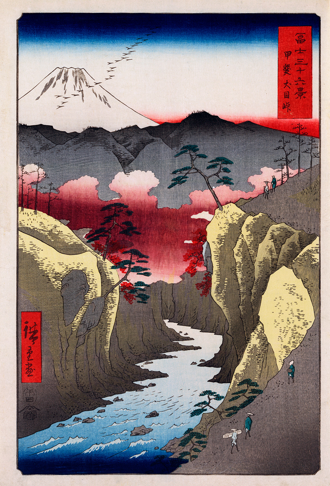
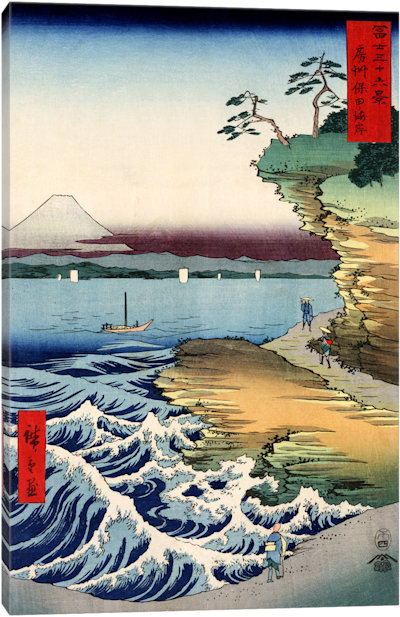
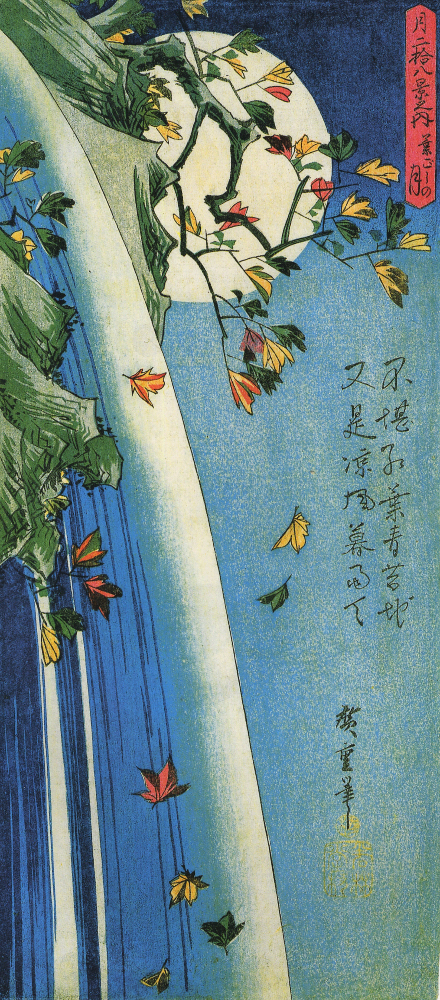
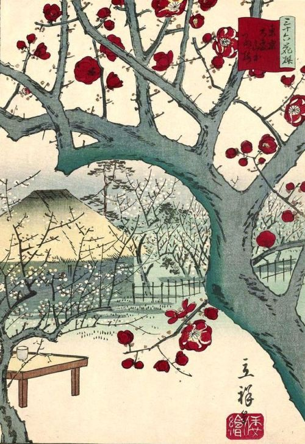
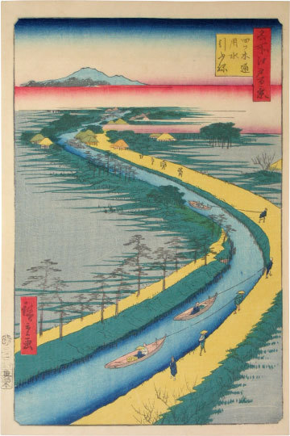

Utagawa Hiroshige
▁ ▂ ▄ ▅ ▆ ▇ Artist Biography ▇ ▆ ▅ ▄ ▂ ▁
Utagawa Hiroshige (1797-1858, sometimes called Ando Hiroshige) was the second
of the two great masters of the Japanese landscape woodblock print, after
Hokusai.
He is particularly known for his scenes featuring snow and rain, which
feauture in many of his best and most famous images, and which has led
to his becoming know as "the artist of rain, snow and mist".
He was born (with the name Ando Tokutaro) in Edo (the name of Tokyo at that
point in time), and originally was intended to follow the career of his
father, a fire-watchman. After his parents' death in 1809, the orphan
Hiroshige gravitated toward the art world, an inclination which had been
encouraged by his father.
In the early 1830's, he started to discover himself as an artist, starting on
the landscapes which became his forte, and changing his signature to
Ichiyusai (sometimes Ichiryusai). His first landscape series was in 1829 or
1830, entitled "Eight Famous Views of Omi", followed by a ten-print series
"Famous Places of the Eastern Capital", which in addition to showing the
influence of Hokusai, also marked the first revelations of Hiroshige's true
genius.
In 1832 he made his first journey down the Tokaido highway, which resulted
in his first great artistic success, the original
"Fifty-Three Stations of the Tokaido",
a series which catapulted him to contemporary fame and success. This series
is is now also universally held among the greatest of all Japanese landscape
prints, and one of the two best series he ever did.




